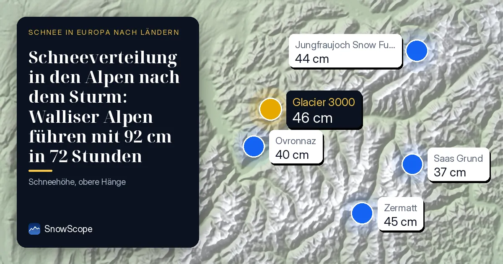

Schneeverteilung in den Alpen nach dem Sturm: Walliser Alpen führen mit 92 cm in 72 Stunden
Ein Sturm hat die Schneekarte der Schweiz neu gezeichnet. Die Walliser Alpen fingen die stärksten Niederschläge ein und sammelten über drei Tage 92 cm an, während das Berner Oberland 54 cm erhielt – ein Muster, das durch die Exposition der Bergketten zum einströmenden Wetttersystem geprägt ist.
Die Live-Schneeprognose für Glacier 3000 in der SnowScope-AppSchneehöhen, Pulverschnee-Alarme und 3D-Karte, gratis.
Wo der Sturm am meisten abgeworfen hat: Walliser Alpen setzen sich ab
Wenn du in hochalpinem Terrain arbeitest, lernst du schnell, dass Stürme nicht alle Bergketten gleich behandeln. Dieser hier bewies die Regel. Die Walliser Alpen, die direkt im Weg der feuchten Luftströmung von Westen standen, fingen in den 72 Stunden bis 17. November 92 cm Schnee ein – deutlich mehr als jede andere Zone. Das Berner Oberland im Norden verzeichnete 54 cm, eine respektable Summe, aber etwa halb so viel wie sein südlicher Nachbar.
Diese Unterschied widerspiegelt die Orografie, die wir vor Ort beobachten: Die Walliser Alpen steigen steil auf und präsentieren der herrschenden Strömung eine breite Flanke. Das Glacier 3000, gelegen an der Schnittstelle dieser Bergketten, verzeichnete im selben Zeitraum 67 cm – ein Beleg dafür, wie lokale Topografie Niederschlag kanalisiert und verstärkt. Das Muster ist klassisch für Schweizer Stürme: Das hohe Gelände zwischen dem Rhônetal und der Grenze fängt Feuchte auf; Bergketten im Norden erhalten weniger.
| Skigebiet | Schneehöhe | Neuschnee, 72 h | Erwartet, nächste Tage | Gipfel |
|---|---|---|---|---|
| Glacier 3000 | 46 cm | 67 cm | 91 cm | 2.931 m |
| Zermatt | 45 cm | 42 cm | 60 cm | 3.872 m |
| Jungfraujoch Snow Fun Park | 44 cm | 44 cm | 71 cm | 3.461 m |
| Ovronnaz | 40 cm | 54 cm | 78 cm | 2.456 m |
| Saas Grund | 37 cm | 28 cm | 41 cm | 3.142 m |

Neuschneeergebnis: 29 cm in 24 Stunden auf dem Höhepunkt
Die intensivste Phase des Sturms trat als ein einziger Puls auf. Etwa 11.300 Quadratkilometer der Alpen erhielten in diesen drei Tagen mindestens 5 cm Neuschnee – eine beachtliche Fläche, obwohl die Gesamtschneebedeckung von 16.510 auf 12.830 Quadratkilometer sank.
Dieser scheinbare Widerspruch – starker Neuschnee, aber sinkende Gesamtbedeckung – offenbart, was Anfang November passiert: Niederschlag fiel auf exponierten Graten und Pässen, aber in tieferen Lagen herrschte Regen vor und bestehende dünne Flecken schmolzen. Die Schneegrenze liegt derzeit nahe 1.700 m; unterhalb dieser Höhe wird das neue Material nicht bestehen bleiben.

Die Höhe erzählt die Geschichte: Von 2.000 m aufwärts durchgehend weiß
Die Höhenbänder zeigen klar die Grenze zwischen vergänglichem und beständigem Schnee. Von 500 bis 1.500 m bleibt die Bedeckung fragmentarisch – 0 bis 5 Prozent. Zwischen 1.500 und 2.000 m bedeckt Schnee nur die Hälfte des Geländes, und die Mächtigkeiten betragen im Mittel nur 2 cm; Felsen und Vegetation dominieren die Landschaft. Über 2.000 m beginnt die Kontinuität. Das Band von 2.000 bis 2.500 m hält nun durchschnittlich 8 cm und 96 Prozent Bedeckung. Über 2.500 m ist das Bild komplett: 22 cm durchgehende Schneedecke, 100 Prozent Bedeckung. Hier beginnt das zuverlässige Skifahren im November.
Die führenden Resorts: Gletschergelände sichert sich den Vorteil
Glacier 3000 führt nun mit 46 cm in der Basis an, obwohl diese Zahl die Bedingungen höher oben untertreibt. Zermatt folgt dicht dahinter mit 45 cm; seine Höhenlage (3.872 m Gipfel) sichert die Erhaltung der jüngsten Schneezufuhr. Jungfraujoch Snow Fun Park hält 44 cm auf 3.461 m, und Ovronnaz, tiefer gelegen bei 2.456 m, aber günstig positioniert, um Westwind einzufangen, steht bei 40 cm. Das sind frühe Jahreszeittiefen – der Schnee ist noch jung und kann sich setzen – aber sie stellen eine solide Grundlage dar. Alle fünf verfolgten Resorts zeigen übernormale Bedingungen gegenüber ihren typischen Novemberwerten.
Was kommt als Nächstes: Weitere Schneefälle für drei Tage prognostiziert
Der Sturm ist nicht vorbei. Im Vergleich dazu zeigt die folgende Woche eine scharfe Verlangsamung: Der Zeitraum vom 25. November bis 1. Dezember wird voraussichtlich nur 40 cm bringen. Die ersten Anzeichen für Neuschnee könnten bereits am 18. November ankommen, wobei das Hauptereignis um den 20. herum stattfindet.
Trend und Ausblick: Bedeckung zurückgegangen, aber Höhe begünstigt Stabilität
Gestern betrug die schneebedeckte Fläche 16.510 Quadratkilometer; heute sind es 12.830 – ein Rückgang um 3.680 Quadratkilometer. Woche für Woche hat sich die Summe jedoch kaum verschoben, nur um 40 Quadratkilometer von 7. November gesunken. Das sagt uns, dass der Neuschnee dort bleibt, wo es zählt: oberhalb 2.000 m. Tiefere Lagen werden weiterhin zwischen Schnee und Schmelze zykliert. Wenn der nächste Puls um den 20. ankommt, wird die Bedeckung erneut spitzen, aber ihre Beständigkeit hängt davon ab, ob die Temperaturen in der folgenden Zeit kühler werden.
Tipps für Skifahrer
- Ski fahren oberhalb 2.000 m, wo Schnee durchgehend ist; unterhalb dieser Höhe bleiben Pisten dünn und teilweise felsig. Schau vor Skitouren in den Walliser Alpen in die lokalen Lawinenbulletins, wo die stärksten Schneemengen auf steilem Gelände liegen.
- Rechne mit rascher Entwicklung der Schneedecken-Stabilität in den nächsten 48 Stunden, wenn neues Material setzt und bindet. Das Berner Oberland und die Walliser Alpen werden unterschiedlich auf Erwärmung reagieren; höhere, schattigere Hänge in den Walliser Alpen könnten instabile Schichten länger bewahren.
- Planen Gletschern und Hochpass-Touren für 20. November an, wenn Neuschnee Sicht und Bedeckung erneuert. Geländebedingungen auf tieferen Pisten bleiben bis mindestens Mitte Dezember marginal.
Zu diesen Zahlen
Die Schneehöhen der Skigebiete sind der meiste Schnee in den oberen Hängen am angegebenen Tag; es sind Schätzungen für eine Fläche, keine Messung an einem Punkt. Prognosen können sich ändern. Lies vor dem Freeriden immer den offiziellen Lawinenlagebericht.
Diesen Bericht zitieren
Für Forschung, Lehre oder Presse: Zahlen und Grafiken sind unter CC BY 4.0 mit dieser Quellenangabe frei nutzbar.
SnowScope (2026), Schneeverteilung in den Alpen nach dem Sturm: Walliser Alpen führen mit 92 cm in 72 Stunden, https://snowscope.app/blog/de/2026/11/switzerland-snow-report-17-november-2026.html, abgerufen am 2026-11-17
SnowScope (Atlas Labs). (2026, November 17). Schneeverteilung in den Alpen nach dem Sturm: Walliser Alpen führen mit 92 cm in 72 Stunden. SnowScope snow reports. https://snowscope.app/blog/de/2026/11/switzerland-snow-report-17-november-2026.html
BibTeX
@misc{snowscope2026switzerlandsnowreport17n,
author = {{SnowScope (Atlas Labs)}},
title = {Schneeverteilung in den Alpen nach dem Sturm: Walliser Alpen führen mit 92 cm in 72 Stunden},
year = {2026},
month = nov,
howpublished = {\url{https://snowscope.app/blog/de/2026/11/switzerland-snow-report-17-november-2026.html}},
note = {Published 2026-11-17 12:53 UTC; accessed 2026-11-17}
}· CC BY 4.0 · Methoden, Daten und Werkzeuge →
Glacier 3000: Schnee und Temperatur nach Höhe, dieser Winter vs letzter (Werkzeuge) →
Glacier 3000 folgen
Gratis: eine Nachricht, wenn Neuschnee kommt, und jeden Morgen die Vorhersage.